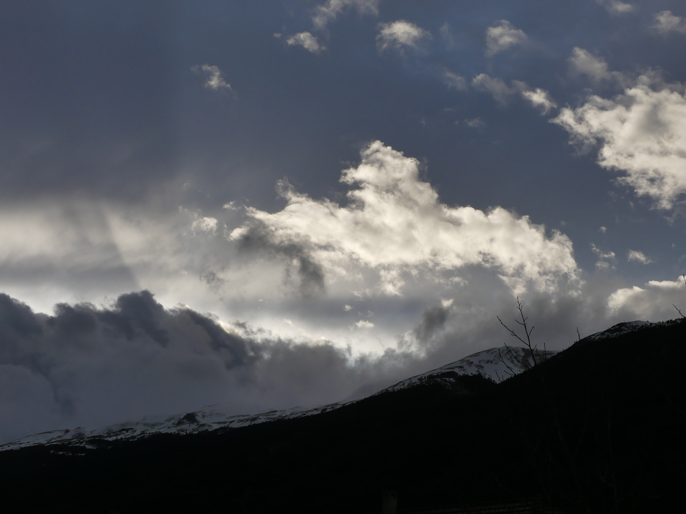
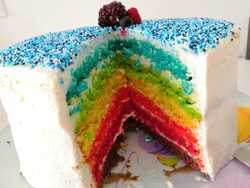
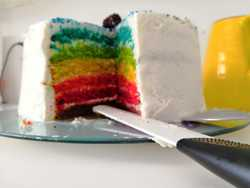
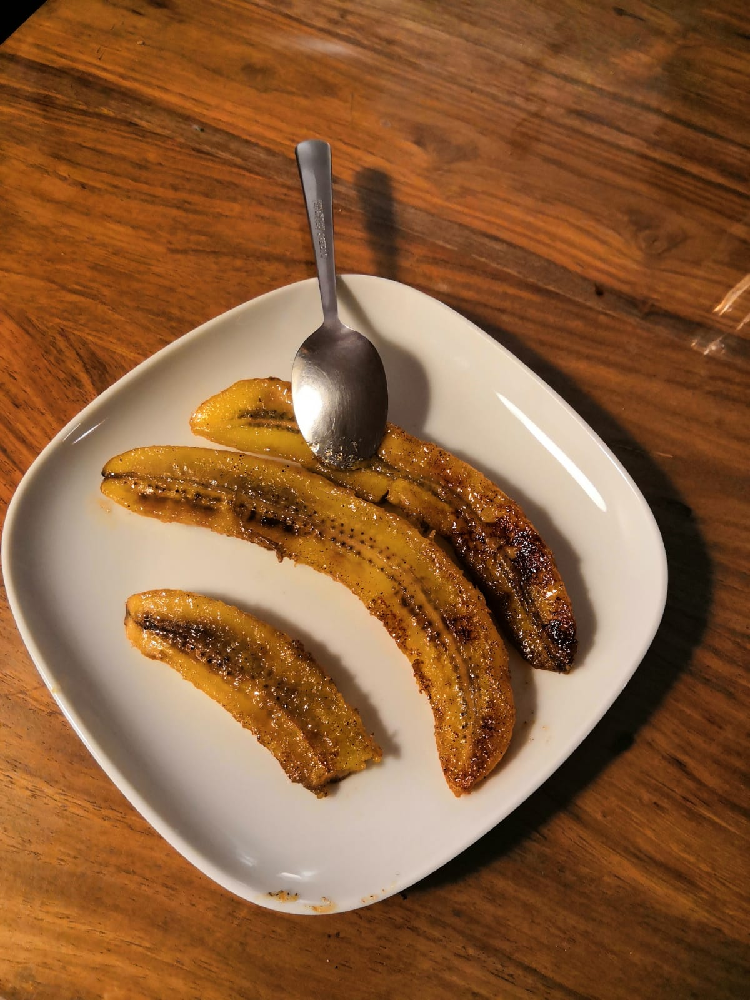
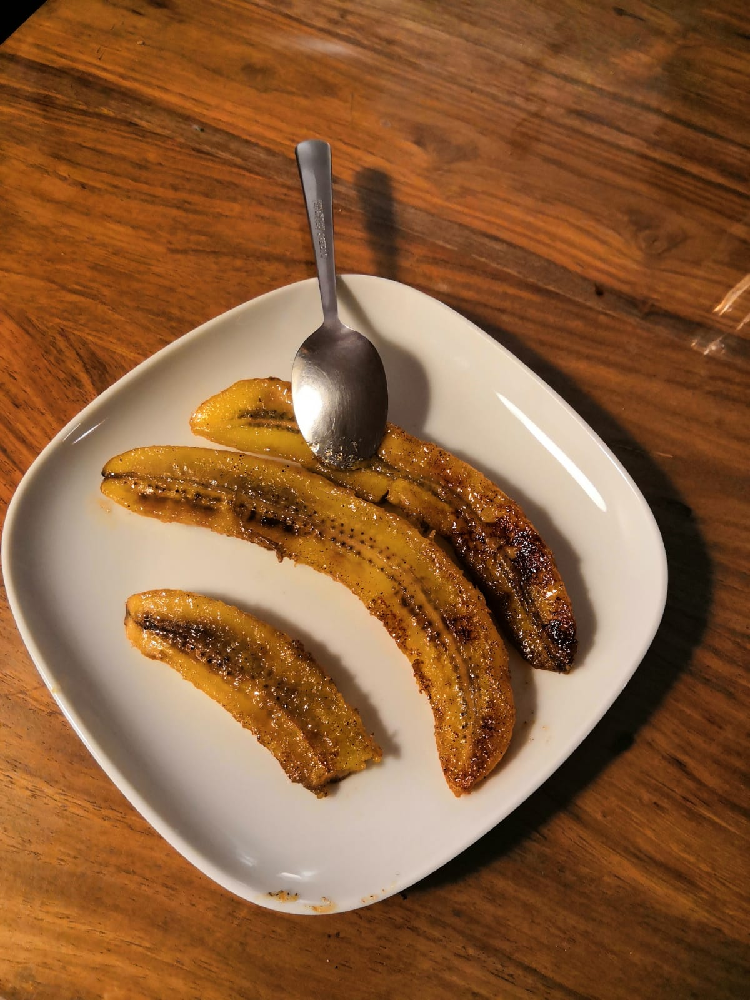
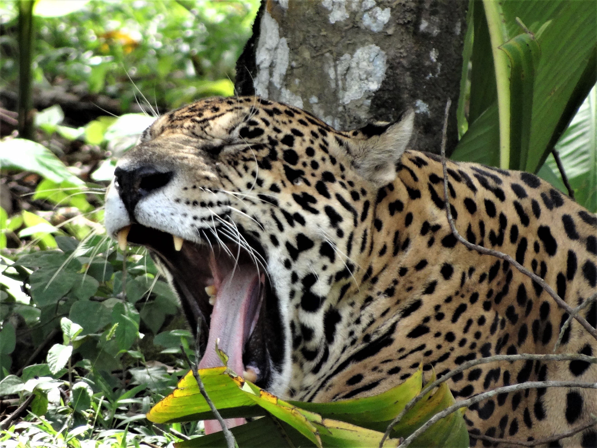
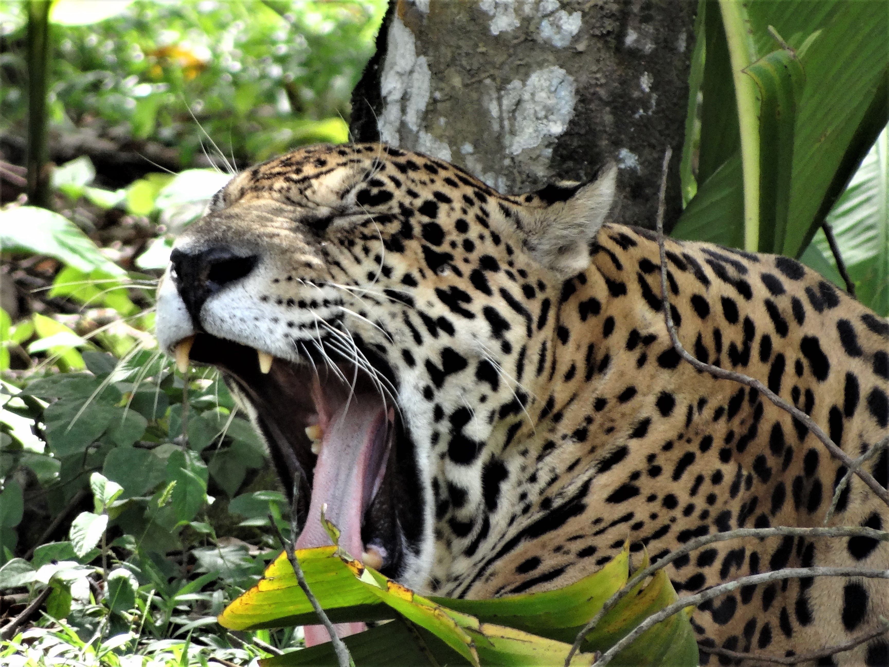

Dans la vie, j'aime beaucoup de choses.Toujours est-il qu'on me demande de me présenter... Voici donc un apperçu de ce que j'aime par dessus tout:
- Mes chats:
- Prendre des photos . Surtout des nuages, j'adoooore les nuages:
- Cuisiner, mais surtout manger ! :
- Danser!!! Je danse depuis plus de 10 ans maintenant !! Autant dire que danser est pour moi à la limite du vital...




 



 

 Back to the top!
Back to the top!